Tracy Xia
Part 1.1
Gradient magnitude computation is done by finding the partial derivatives in x and y of a given image then taking the norm. We can do this by convolving the image with the finite difference operators Dx = [1 -1] and Dy = [1 -1]^T. After we convolve the image with the Dx and Dy filters, we can combine the results by taking the norm of the two. To create the edge image, pick a threshold to binarize the gradient magnitude image by.

Cameraman Image

Cameraman changes in X direction

Cameraman changes in Y direction

Cameraman Edge Image
Part 1.2
To remove noise in our edge image, we can first blur the image, then repeat the same process at 1.1. This creates an edge image that is less noisy and smoother. This also makes the edges thicker and we have to pick a different threshold that will be able to pick up all of the blurred edges.
We can achieve the same result by convolving our gaussian with Dx and Dy instead, the convolving our image (not blurred) with the resulting filters.
Edge Image of Blurred Cameraman
DoGx
DoGy
Edge Image using DoG
Part 2.1
For this part, we find the high frequency components of an image and add it back into the original image to sharpen. We can find the high frequency components by blurring the image (low frequency) then subtracting the blurred image from the original.
Sharpening the Taj Mahal:

Original Taj Mahal Image
Sharpened Taj Mahal Image
Sharpening the Cookie:
Original Cookie Image
Sharpened Cookie Image
Here are some other samples in this order: Original -> Blurred -> Sharpened
Original Strawberry Image
Blurred Strawberry Image
Sharpened Strawberry Image
Original Zucker Image
Blurred Zucker Image
Sharpened Zucker Image
Compared to the original images, the blurred then sharpened images lack the same level of clarity. Edges in these images tend to be darker and the overall contrast is also higher. Overall, they differ from the original images, but are definitely more sharp than the blurred version.
Part 2.2
To create hybrid images, we can take the high frequency components of one image and low frequency images of another and combine them. The result is an image in which you see different things at different distances from the images. From far away, we see the low frequency parts of the image and from close up, we see the high frequency parts of the image. Since the high and low frequency parts of the hybrid are from different images, we will see different things!
Derek Nutmeg

Derek (Low Frequency)

Nutmeg (High Frequency)
NutmegDerek (Grayscale)
NutmegDerek (Colored)
Generally, it may be better to use a grayscaled image for the low frequency parts since the high frequency parts has less saturation so close up the color from the low frequency parts might overpower the high frequency parts. However, the results can be good with both colored as well!
Lionardo
Leonardo

Lion
Lionardo
Fourier Analysis:
Leonardo
Lion
Filtered Leonardo
Filtered Lion
Lionardo
Here are some more samples:
Morphed Expression
Happy Expression
Neutral Expression
Morphed Expression
Kitty^2 (Failed Example)

Kitten
Hello Kitty
Kitty^2
Kitty^2 did not do very well since the proportions of the two images did not line up very well and Hello Kitty's outline was very simple so it did not work well as a high frequency component. Even close up, the kitten overpowered Hello Kitty.
chimera time...
Part 2.3
In this part, Gaussian and Laplacian stacks are created. Gaussian stacks repeated applies the Gaussian filter to the image at each level while Laplacian stacks takes the high frequency components (previous image - blurred image) at each level.
My recreation of the outcomes of Figure 3.42
Masked Apple Gaussian and Laplacian Stacks:
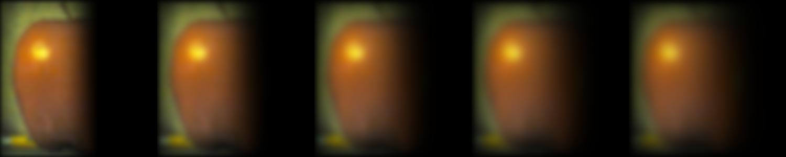 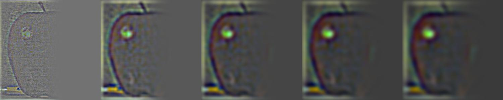Masked Orange Gaussian and Laplacian Stacks:
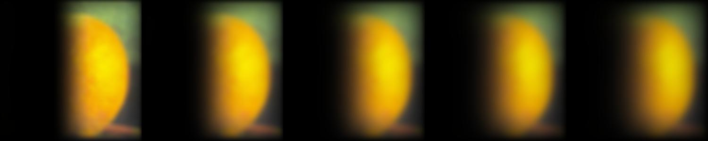 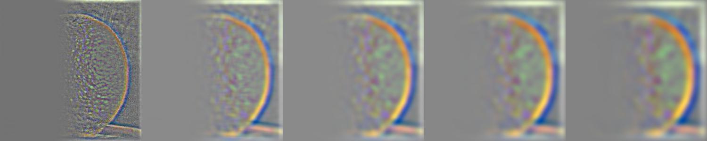Oraple Gaussian and Laplacian Stacks:
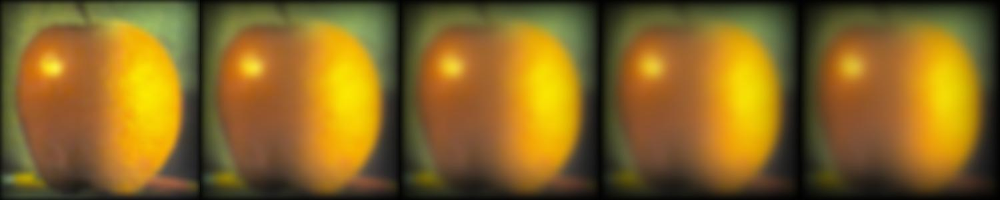 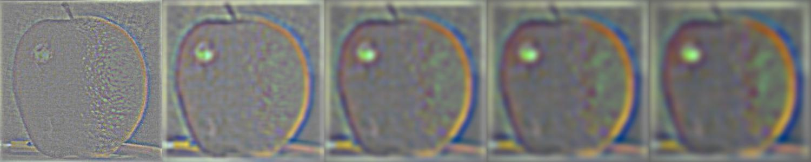Part 2.4
Finally, following the algorithm from page 230 of the 1983 paper by Burt and Adelson, we can create blended images! With an additional Gaussian stack for the mask, we are able to create smooth blending of two images without noticeable seams.
First and Foremost: the ORAPLE!

Apple

Orange
Oraple
The Moonkie
Mooncake
Cookie
Moonkie
Masked Mooncake Gaussian and Laplacian Stacks:
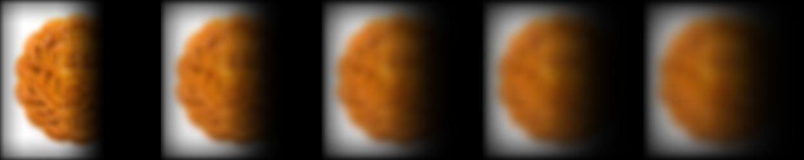 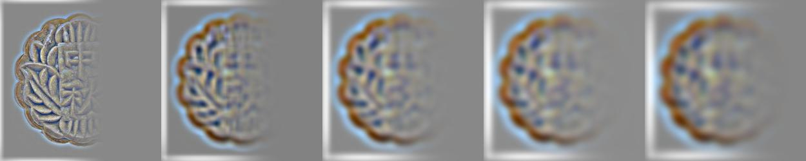Masked Cookie Gaussian and Laplacian Stacks:
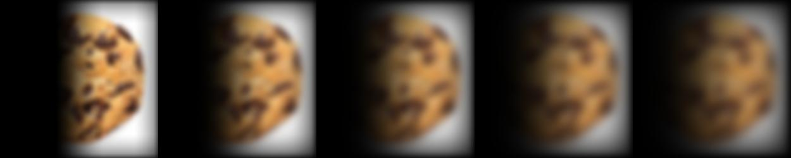 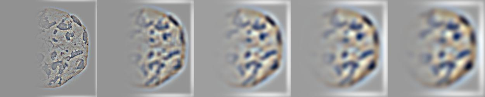Moonkie Gaussian and Laplacian Stacks:
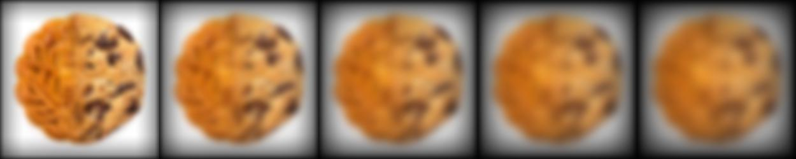 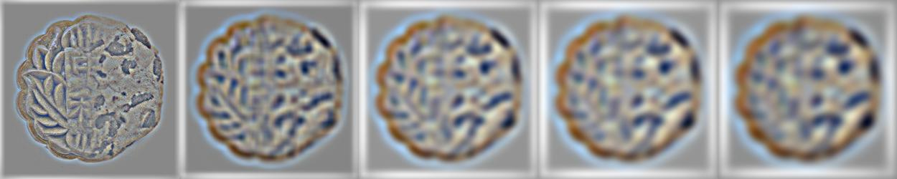Smiling Hnad (Irregular Mask)
Hand
Smile
Smiling Hand
Masked Hand Gaussian and Laplacian Stacks:
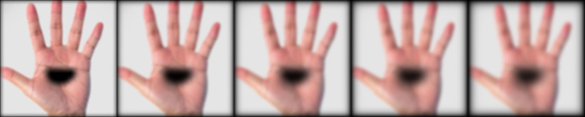 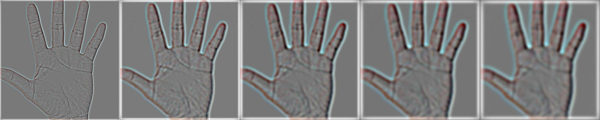Masked Smile Gaussian and Laplacian Stacks:
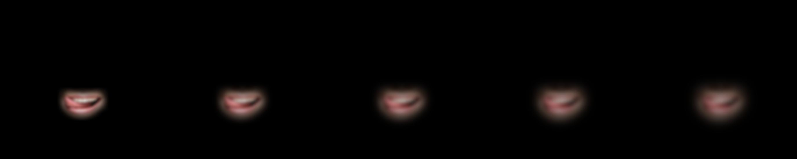 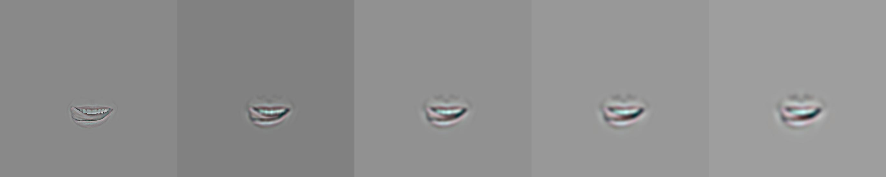Smiling Hand Gaussian and Laplacian Stacks:
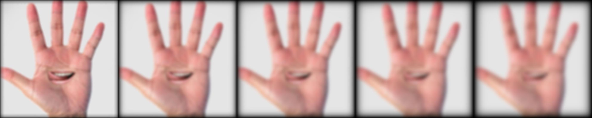 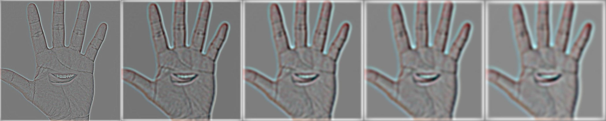GiraffeHorse (Irregular Mask)
Giraffe
Horse Head
GiraffeHorse
Project Takeaways:
From this project I learned just how much we can do with image frequencies! We were able to blur and sharpen images, make hybrids, and create blended images. It was also interesting to see how different parameters that we select (kernel size, sigma, etc) can greatly affect our results, and quite some experimenting is needed to find something that works well. Overall, this project was super fun, and I will probably be making more nightmare-inducing images in my free time...